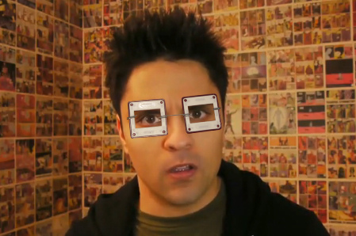
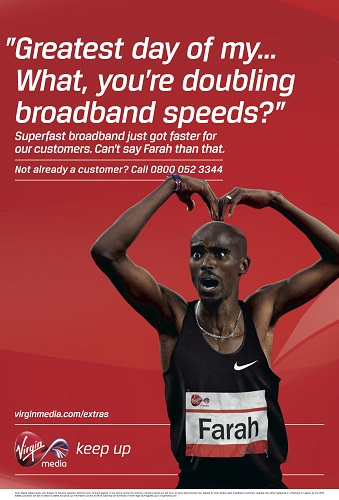
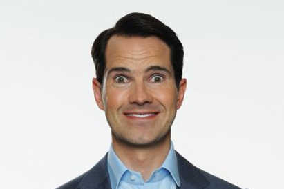

Murdered By My Father: The uncomfortable reality behind BBC Three's hard-hitting drama
BBC Three’s controversial new docu-drama focuses on honour killings; a topic which is garnering increasing attention due to the high-profile murder cases of young Pakistani girls who refuse to obey their parents. We spoke to the programme’s writer, Vinay Patel, to explore the open secret of honour based violence amongst Asian communities here in the UK.
BBC Three’s Murdered By My Father adds yet another programme to the newly online channel’s digital repertoire. Following on from 2014’s BAFTA winning Murdered By My Boyfriend, which saw young woman Ashley suffer horrific domestic and psychological abuse from partner Reece, the equally deserving Murdered by My Father follows a Romeo and Juliet type narrative of Salma and Imi, two British-Pakistanis who have fallen for each other against the best interests of Salma’s father, Shahzad. The harrowing climax results in, well, how the programme got its name; in an unsettling, gruesome and violent scene, viewers will watch in horror as Salma becomes a limp, lifeless being by her father’s hand.
But for some, these scenes hit them harder than just as a piece of well scripted drama; what they saw reflected on their laptop screen was a grim reality of their own lives.
Murdered by My Father highlights the plight of honour killings in the UK today; happening predominantly amongst the Asian community, there has been over 12,000 instances of honour-based violence in the UK alone since 2010, with an estimated 60 murders over that period - statistics that writer Vinay Patel chose to show the audience at the end of the programme.
“It was vital that we showed the audience the extent of the problem even in the western world.” Patel told Stream. “We needed to show them that it was not just an Asian problem, it’s a British problem.”
Indeed, it is the evident Britishness of Salma’s family that Patel really wanted to hammer home to the audience; we see Salma get on the tube to college, argue with her brother and do her homework at the kitchen table. She wears jeans and a khaki coat, with her long glossy black hair not confined to a hijab. Shahzad is also Westernised, in spite of the forced marriage he imposes on his daughter; we see him trying to lose weight and working out at his rowing machine, and listening to hip-hop in his van.
"It's not just an Asian problem, it's a British problem."
“It was important we pitched this as a family drama that the audience could also see elements of themselves in. We kept the Punjabi minimal and used flat accents, so people could still look at a Pakistani family and think ‘this is me too’.” Patel explains. “After all, this is a BBC drama, pitched to a predominately White audience, so we had to portray this in a way it could be universally understood.”
However, writing about a Pakistani family, in spite of how Westernised they appear to be, was initially fraught with problems for Patel; himself British born from Indian Hindu decent.
“There were some comments from people that the show should have been written by someone who was Pakistani.” Patel shrugs. “But the issue here isn’t religion, it’s about culture; pride and shame is what prompted Shahzad’s actions, not the fact he was Muslim.”
The BBC was so concerned about the reaction Murdered By My Father would prompt from the Pakistani community, they warned Patel off Twitter and told him to remove his email address from his website; advice Patel chose not to take.
“I’m really active on Twitter and the reaction I’ve got from Murdered By My Father has been amazing; I’ve had so many people message me tell me about their own experiences, and its vital that people are able to have those conversations. That’s why I was thrilled Murdered By My Father was going to be available through streaming, as it opens up the show to a wider audience who can talk about it online immediately as opposed to just happening to catch it on TV.”

Honour-based violence has become far more prominent in the UK, which prompted the commissioning of Murdered by My Father; high profile cases, such as the murder of Banaz Mahmod (a 20-year-old girl of Iraqi decent who was raped, tortured and killed by her two cousins in 2007 because they disapproved of her boyfriend) and Shafilea Ahmed (a 17-year-old who was suffocated by her father before being buried in a ditch in Warrington, 2003) have lead to the 14th July being dedicated to commemorating victims of honour crimes.
The Halo Project, a charity launched in 2011 as a response to issues related to honour based violence, told Stream that the number of calls they receive had risen significantly over the last five years.
“Although there are statistics estimate there are twelve honour based murders a year since 2010, this doesn’t include the number of people who are moved out the country and never heard from again.” Yasmin Khan, founder of the Halo Project explains. “Having a day especially to commemorate victim is a start, but more still needs to be done to raise awareness to what is happening to these women; there’s so much more going on behind closed doors.”
Khan, who found the show uncomfortable viewing, even as someone who works with victims of honour based violence every day, praised the gritty realism Patel managed to convey.
"The character of Shahzad was very well written." Khan said of the show. "The immense pressure that fathers' in the Asian community have to endure in order to uphold a certain honour is something that is certainly very troubling, and very apparent even here in the UK."
Whilst Khan observed that the Halo Project received calls from both sexes from a variety of different nationalities, the vast majority of callers were Pakistani women – who were being forced into marriages and suffered honour based violence at the heart of their fathers.
It is the role of Shahzad (played by Adeel Akhtar, previously seen in Four Lions) that Patel found most difficult to write; Akhtar’s powerful and somehow disturbingly likeable portrayal of the widower who fundamentally sees himself as doing right by his family has found audiences reluctantly sympathising with a man they know is a murderer.
“I wanted my audience to feel this dilemma of actually quite liking Shahzad, in spite of what he does, and Adeel did it so brilliantly.” Patel says. “There is very few guesses in what happens at the end when writing for a show called Murdered By My Father, so I had to create a tension from within the show; I wanted audiences to not want to believe that Shahzad was going to, or even could consider killing Salma.”
To help him when writing Shahzad’s character, Patel researched honour killings both in the UK and abroad to try and understand just what motivates a father into murdering his daughter, telling of stories he came across such as the man who strangled his daughter before setting her corpse on fire and burying her body under a fridge in a garden all because she refused to marry who her family had picked out for her.
“It was a real head fuck, writing Shahzad.” Patel admits. “It was so difficult to create someone that it’s vital to have sympathy for when they are a monster. Like these other fathers, he justifies his actions by telling himself he’s doing it for his daughter’s own good, but the truth is that he is doing it for himself.”
However, Patel excels in letting the viewer follow Shahzad’s emotional logic which results in the brutal final scenes of the programme.
“In this community, your social standing is more than just a pride thing, it’s your economic imperative.” Patel explains. “Shahzad sees marrying his daughter off is essential in order to be part of the group of the community he works with; if he is rejected by that group, in his eyes, he can’t provide for his family and he may as well be dead.”
When asked about his own feelings on Shahzad, Patel hesitates.
“He is a monster, yes, but we need to have sympathy for him, because he doesn’t know what he is a monster, he thinks it’s for his own good. We need to have more honest, three dimensional portrayals of the Asian community in the UK on this issue, because the only way to stop monsters like Shahzad is to understand just what motivates them.”
Whilst Patel has received mostly praise for Murdered By My Father, which is his first television piece, there was one review he took issue with.
“The Telegraph called it brave, which I fucking hated.” Patel scoffed. “It’s not brave for me to write a piece on honour killing, it’s my job. Like how is it brave, as if anyone is going to come after me as an advocate for honour killings. The real bravery is with those who face issues like Salma does every day.”
But there was one review that Patel was slightly more chuffed with.
“Heat magazine gave me five stars.” He smiles broadly. “I’ve had BAFTA recommendation in the Radio Times and five stars in Heat, so I know I’ve made it as a writer now!”
Watch our special edition Stream Reacts video to Murdered by My Father on our channel.
Latest
-
Think Drugs Map of Britain - Exploring the History of Drug Use
-

Community Forum: The Best Dressed Characters on Screen?
-

Think Hand Of God - As Bad As They Say?

Think How Accurate is Transparent? We spoke to a trans man
-
Think The Man in the High Castle - What would America look like?
-

New Witless: BBC Three's Glorious New Comedy
- 
List YouTube's Biggest Successes: A Definitive List
- 
New Bloodline - Stream's Second Series Premier

Interview Jessica Jones - We Speak to Krysten Ritter
-
New Stream reacts - to Chelsea Handler's Netflix show

Quiz Are you more Grace or Frankie?
- 
List Jimmy Carr's Filthiest One Liners

Think Louis Theroux - What was the weirdest weekend?